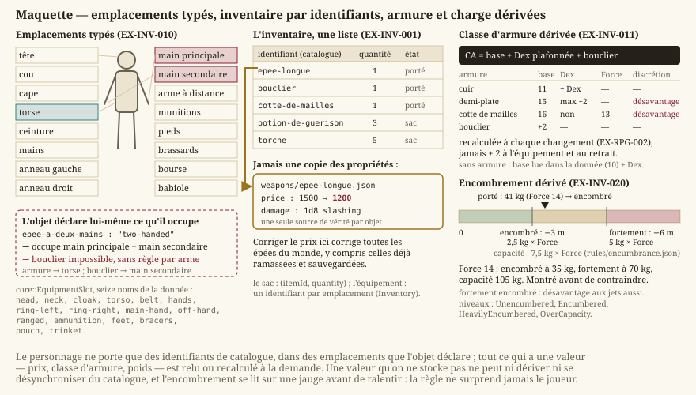

Inventaire et économie
Statut : possession et équipement livrés, économie à venir. L'inventaire, les emplacements d'équipement et le catalogue d'objets sont livrés et testés (
LOT-14,LOT-34). Le butin, les marchands et la monnaie qui circule attendent la version0.2.0(LOT-201). Dépend derpg.md(l'agrégat de fiche) et decontenu.md(le catalogue d'objets).
Ce que le personnage porte, ce qu'il en fait, et ce que cela vaut. Le monde étant un bac à sable de treize régions, l'économie doit se déduire des données de région plutôt que d'être réglée marchand par marchand.
1. Porter


- EX-INV-001 — L'inventaire est une liste d'identifiants de catalogue accompagnés d'une quantité et d'un état, jamais une copie des propriétés de l'objet. Corriger le prix d'une épée doit corriger toutes les épées du monde, y compris celles déjà ramassées et sauvegardées.
- EX-INV-010 — L'équipement porté occupe des emplacements typés (main principale, main secondaire, torse, etc.), et un objet déclare ceux qu'il occupe. Une arme à deux mains occupe les deux mains : c'est la seule façon d'empêcher la combinaison arme lourde et bouclier sans écrire une règle particulière pour chaque arme.
- EX-INV-011 — La classe d'armure est dérivée de l'équipement porté selon la formule déclarée par l'armure elle-même — base, part de Dextérité éventuellement plafonnée, bonus de bouclier — et recalculée à chaque changement (
EX-RPG-002). L'armure déclare aussi son exigence de Force et son incidence sur la discrétion, faute de quoi les armures lourdes seraient strictement meilleures et le choix disparaîtrait.
- EX-INV-020 — L'encombrement est dérivé du poids total porté et de la Force. Il doit être visible avant d'être contraignant : un joueur qui découvre qu'il est surchargé au moment de fuir un combat subit une règle qu'il n'avait aucun moyen d'anticiper.
2. Échanger
- EX-INV-030 — La monnaie est à taux fixes et déclarés. Toute somme est stockée dans l'unité la plus fine et présentée dans la plus lisible ; aucune conversion ne doit perdre de valeur par arrondi. Un joueur qui perd de l'argent en changeant de dénomination cesse de faire confiance à tout le reste du système.
- EX-INV-031 — Les prix d'achat et de vente sont distincts, et modulés par les statistiques de la région (
EX-CNT-030) : prospérité économique pour le niveau des prix, accès à la magie pour la présence d'objets magiques à l'étal. C'est ce qui donne un intérêt mécanique au voyage, plutôt qu'un simple changement de décor.
3. Gagner
- EX-INV-040 — Le butin est composé par table, et reproductible à graine égale : la graine dérive de l'identité du contenant, jamais de l'horloge. Un coffre qui se re-tire à chaque ouverture n'est pas un monde, et un rechargement de sauvegarde ne doit pas être une machine à sous.
- EX-INV-041 — Un objet magique déclare sa rareté et, le cas échéant, la nécessité d'une harmonisation limitée en nombre. Sans plafond d'harmonisation, la progression consiste à accumuler, et le choix d'équipement — qui est le cœur de la récompense — disparaît.